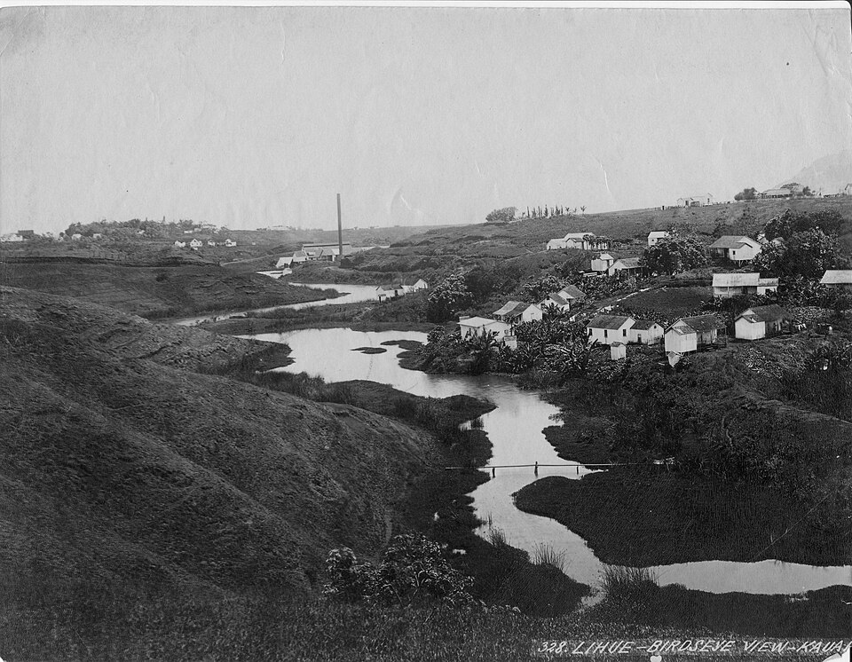

Puhi Camp
Place: Puhi Camp, Puhi, Kauaʻi
Type: Former plantation camp / lost community
Namesake: Puhi, an older Hawaiian place name associated with the village and stream, meaning “blow”
Story it tells: How a large Grove Farm plantation community grew around the older Hawaiian place of Puhi, then largely disappeared as workers moved into modern housing and the former camp was rebuilt as Kauaʻi Community College.

Puhi was already a Hawaiian place in southeastern Kauaʻi well before Westerners arrived. Mary Kawena Pukui, Samuel Elbert, and Esther Mookini identify Puhi as the name of both a village and stream and translate the name as “blow.” They also preserve a tradition that the shark god Kaholi-a-Kāne lived in a cave here. The older name survived the transformation of the land and was later carried by the large plantation community that became known as Puhi Camp.
Grove Farm began developing Puhi Camp around 1917 as the plantation expanded and needed centralized housing for its growing workforce. Originally planned with about 120 homes, the camp eventually grew to roughly 600 houses and nearly 1,200 residents. During the 1930s, Grove Farm also shifted its industrial operation from Līhuʻe to Puhi, building offices, workshops, warehouses, stables and other facilities nearby.
Life at Puhi Camp reflected the diverse workforce that sustained Kauaʻi's plantation economy. Families with roots in China, the Philippines, Japan, Puerto Rico and Portugal lived alongside one another in houses surrounded by fruit trees, gardens, hibiscus hedges and wooden fences. The camp had three stores, a Chinese laundry, gas station, slaughterhouse, playground and halls for movies and community gatherings. Children swam at a reservoir remembered as Up Pond. Built to house plantation workers, Puhi Camp grew into a community with an identity of its own.
Beginning in the late 1960s, Puhi Camp began to disappear as Grove Farm employees moved into newer homes across Kaumualiʻi Highway. Most of the old plantation houses were demolished during the 1970s, and the last were removed in the 1980s. Much of the former camp landscape became part of the new Kauaʻi Community College campus, which opened at Puhi in 1976. One particularly important piece of the old community survived: the Puhi Plantation Camp Cemetery remains among the college grounds, preserving the graves of early plantation workers where hundreds of homes once stood. Even after the camp disappeared, Puhi remains, living on through the stream and the new Puhi community below the highway.